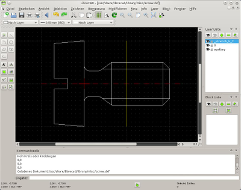

LibreCAD
Dieser Artikel wurde für die folgenden Ubuntu-Versionen getestet:
Ubuntu 16.04 Xenial Xerus
Ubuntu 14.04 Trusty Tahr
Zum Verständnis dieses Artikels sind folgende Seiten hilfreich:
LibreCAD  ist ein Open-Source CAD-Programm für zweidimensionale Zeichnungen. Mit LibreCAD können technische Zeichnungen wie beispielsweise Pläne für Gebäude, Einrichtungen oder mechanische Teile sowie Schemata und Diagramme erstellt werden. Das Programm ist ein Fork der QCAD CE (Community Edition). RibbonSoft
ist ein Open-Source CAD-Programm für zweidimensionale Zeichnungen. Mit LibreCAD können technische Zeichnungen wie beispielsweise Pläne für Gebäude, Einrichtungen oder mechanische Teile sowie Schemata und Diagramme erstellt werden. Das Programm ist ein Fork der QCAD CE (Community Edition). RibbonSoft  , der Hersteller von QCAD, veröffentlichte den Quellcode von QCAD CE unter der GPL. Jedoch beruht die Community Edition auf der mittlerweile überholten Version 3 von Qt und der Quellcode der nachfolgenden QCAD Versionen wurde nicht mehr freigegeben. Mit dem Fork der QCAD CE wurde die Portierung von Qt3 auf Qt4 begonnen. Der Hauptteil der Portierung ist bereits lange abgeschlossen und die letzte Abhängigkeit zu Qt 3 (libqt4-qt3support) wurde mit der Freigabe von LibreCAD 2 (ab Ubuntu 13.10) entfernt.
, der Hersteller von QCAD, veröffentlichte den Quellcode von QCAD CE unter der GPL. Jedoch beruht die Community Edition auf der mittlerweile überholten Version 3 von Qt und der Quellcode der nachfolgenden QCAD Versionen wurde nicht mehr freigegeben. Mit dem Fork der QCAD CE wurde die Portierung von Qt3 auf Qt4 begonnen. Der Hauptteil der Portierung ist bereits lange abgeschlossen und die letzte Abhängigkeit zu Qt 3 (libqt4-qt3support) wurde mit der Freigabe von LibreCAD 2 (ab Ubuntu 13.10) entfernt.
Neben einer Version für Linux steht das Programm ebenfalls für Windows und OSX zur Verfügung.
|  |
| LibreCAD (Version 1.0.x) |
Installation¶
LibreCAD kann über das folgende Paket installiert [1] werden:
librecad (universe)
 mit apturl
mit apturl
Paketliste zum Kopieren:
sudo apt-get install librecad
sudo aptitude install librecad
Nach der Installation ist LibreCAD im Menü unter "Grafik → LibreCAD" zu finden.
Bedienung¶
Beim ersten Programmstart erscheint ein Dialog über den die standardmäßig zu verwendende Maßeinheit, sowie die Sprache der Benutzeroberfläche und der Kommandos ausgewählt werden kann. Alternativ kann man diese Werte im Nachhinein ebenfalls über die Einstellungen anpassen.
LibreCAD unterstützt den Im-/Export von dxf-Dateien. Weitere Formate (z.B. .dwg) sind für zukünftige Versionen geplant.
Die offizielle Dokumentation weist noch starke Lücken auf. Einige (wenige) Funktionen sind im LibreCAD Wiki erklärt, andere sind bspw. in Tutorials auf Videoplattformen zu finden. In der Leiste auf der linken Fensterseite sind die wichtigsten CAD Werkzeuge aufgelistet. Man hat entweder die Möglichkeit, die Werkzeuge per Mausklick auszuwählen (in der Regel öffnet sich hierauf ein Untermenü, das weitere spezielle Optionen liefert) oder man kann eine Zeichnung komplett über das Kommandozeilenfenster am unteren Rand erzeugen.
Beispiel zur Erzeugung eines Kreises (Mittelpunkt 0,0; Radius 10 mm):
kreis 0,0 10
In der Druckvorschau ("Datei → Druckvorschau") kann die Zeichnung durch  auf das entsprechende Symbol in der Werkzeugleiste auf der Seite zentriert oder auf dieser eingepasst werden. Eine manuelle Positionierung der Zeichnung ist per Drag & Drop möglich. Um die Druckvorschau zu verlassen, muss man erneut "Datei → Druckvorschau" auswählen.
auf das entsprechende Symbol in der Werkzeugleiste auf der Seite zentriert oder auf dieser eingepasst werden. Eine manuelle Positionierung der Zeichnung ist per Drag & Drop möglich. Um die Druckvorschau zu verlassen, muss man erneut "Datei → Druckvorschau" auswählen.
Layer und Blöcke¶
Auf der rechten Fensterseite können beliebig viele Zeichnungsschichten (Layer, bzw. Ebenen) erzeugt, sowie ein- und ausgeblendet werden, sodass man bei komplizierten Zeichnung einen besseren Überblick behält. Je nachdem welcher Layer gerade markiert ist, wird in diesen ein neu erstelltes Objekt eingefügt. Möchte man mehrere bereits bestehende Elemente auf einen anderen Layer verschieben, wählt man "Ändern → Attribute", wählt die gewünschten Objekte aus und drückt ⏎ . Im nun erscheinenden Dialog kann man nun neben dem Layer auch Farbe, Linienstärke und Linientyp anpassen.
Zusätzlich können Objekte zu Blöcken zusammengefasst werden, die ebenfalls zur besseren Übersicht aus- und eingeblendet werden können.
Bibliothek Browser¶
Objekte können aus einer Bibliothek einfach in bestehende Zeichnungen eingefügt werden. Hierzu muss zunächst der Pfad zur Bibliothek über die Einstellungen festgelegt werden. Anschließend können die dort abgelegten Objekte über den Bibliothek Browser abgerufen werden. Sofern dieser nicht sichtbar ist, kann man diesen über "Ansicht → Werkzeugleisten → Bibliothek Browser" aktivieren. Nun kann man das gewünschte Objekt markieren, klickt auf "Einfügen" und wählt durch auf die Zeichnung oder per Kommandozeile die Koordinate, an der das Objekt eingefügt werden soll.
Einstellungen¶
Allgemeine Programmeinstellungen wie bspw. die Sprache, Pfade zu Bibliotheken oder Farbeinstellungen für den Zeichnungsbereich sind unter "Bearbeiten → Anwendungseinstellungen" zu finden. Die Einstellungen zur aktuell geöffneten Zeichnung (z.B. Papierformat, Raster, etc.) sind unter "Bearbeiten → Zeichnungseinstellungen" untergebracht.

- Erstellt mit Inyoka
-
 2004 – 2017 ubuntuusers.de • Einige Rechte vorbehalten
2004 – 2017 ubuntuusers.de • Einige Rechte vorbehalten
Lizenz • Kontakt • Datenschutz • Impressum • Serverstatus -
Serverhousing gespendet von